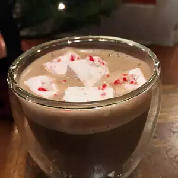

Peppermint Marshmallows

Peppermint flavored marshmallows for putting in hot chocolate, etc.
Ingredients
- 3/4 cup water, divided
- 3 (.25 ounce) packages unflavored gelatin
- 2/3 cup light corn syrup
- 2 cups white sugar
- 2 teaspoons vanilla extract
- 2 teaspoons peppermint extract
- 1/4 cup cornstarch
- 1/4 cup confectioners' sugar
- Line a 9x9 inch baking dish with lightly greased foil or plastic wrap.
Grease another piece of foil or plastic wrap to cover the top, and set aside.
- Place 1/2 cup of water in the bowl of an electric mixer,
and sprinkle gelatin on top of water to soak.
- While gelatin is soaking, combine 1/4 cup of water, corn syrup, and sugar in a saucepan,
and bring to a boil over medium heat. Boil the mixture hard for 1 minute.
- Pour the hot sugar mixture into the gelatin mixture ans beat on high for
12 minutes with electric mixer, until the mixture is fluffy and forms stiff peaks.
Add vanilla and peppermint extracts, and beat just until blended.
- Pour the marshmallow mixture into the prepared baking dish,
using a greased spatula to smooth the top of the candy. Cover the candy with the reserved greased foil
or wrap, and press down lightly to seal the covering to the top of the candy.
-
Allow the marshmallow candy to rest for 4 hours or overnight.
Mix together cornstarch and confectioner's sugar in a shallow dish.
Using oiled scissors or an oiled kitchen knife,
cut the marshmallow candy into strips, then into 1 inch squares.
Dredge the marshmallows lightly in the cornstarch mixture and store in an airtight container.